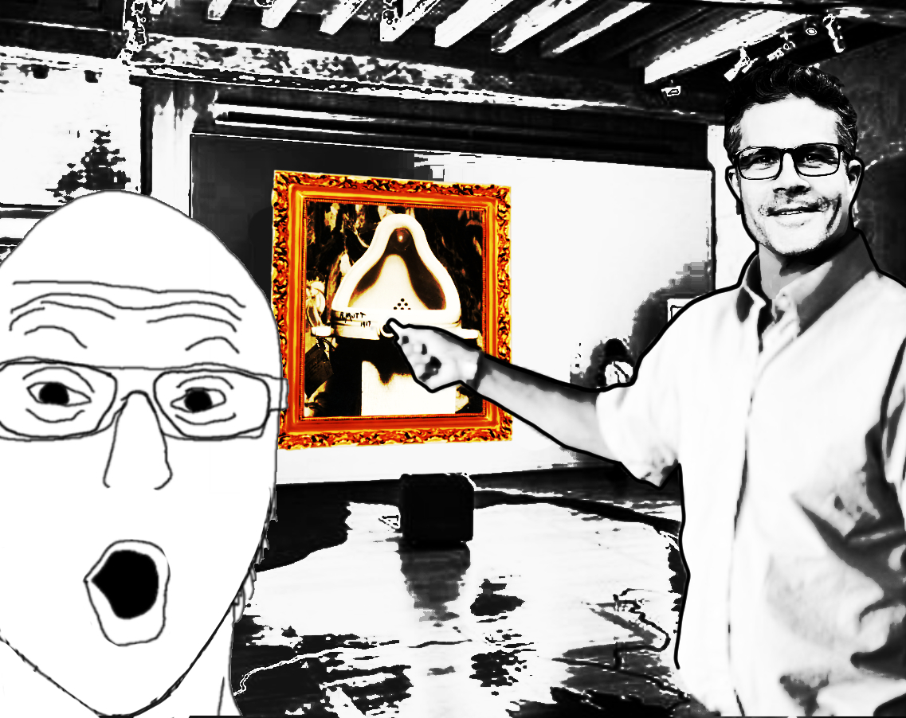

This is a mix and mash of many pictures that I found on the internet. The guy that's pointing at the toilet is our famous Mark Tribe, AKA the definition of New Media Art of Art 74. Using high saturation and brightness gives an uncomfortable sense to the audience, showing a kind of extreme that I think is perfect for this topic.
